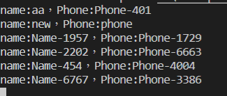

看了許多文章，Repository 是否要使用有許多爭議。
因為要學習的關係，還是需要練習。
Repository
建立 Repository 介面，所以有 ModelRepository都要繼承IRepository
IRepository.cs
1
2
3
4
5
6
7
8
9
| public interface IRepository<TEntity,TKey> where TEntity : class
{
TKey Create(TEntity entity);
void Update(TEntity entity);
void Delete(TKey id);
TEntity FindById(TKey id);
IQueryable<TEntity> FindAll(Expression<Func<TEntity, bool>> expression);
IEnumerable<TEntity> Find(Expression<Func<TEntity, bool>> expression);
}
|
MemberRepository
1
2
3
4
5
6
7
8
9
10
11
12
13
14
15
16
17
18
19
20
21
22
23
24
25
26
27
28
29
30
31
32
33
34
35
36
37
38
39
40
41
42
43
44
| public class MemberRepository: IRepository<MemberModel,int>
{
private readonly MemberContext _context;
public MemberRepository(MemberContext context)
{
_context = context;
}
public int Create(MemberModel entity)
{
_context.MemberModel.Add(entity);
_context.SaveChanges();
return entity.id;
}
public void Update(MemberModel entity)
{
var Members = _context.MemberModel.Single(x => x.id == entity.id);
_context.Entry(Members).CurrentValues.SetValues(entity);
_context.SaveChanges();
}
public void Delete(int id)
{
var User = _context.MemberModel.Single(x => x.id == id);
_context.MemberModel.Remove(User);
_context.SaveChanges();
}
public MemberModel FindById(int id)
{
return _context.MemberModel.SingleOrDefault(x=>x.id==id);
}
public IQueryable<MemberModel> FindAll(Expression<Func<MemberModel, bool>> expression)
{
return _context.MemberModel.Where(expression);
}
public IEnumerable<MemberModel> Find(Expression<Func<MemberModel, bool>> expression)
{
return _context.MemberModel.Where(expression);
}
}
|
Repository建立完成後，需要將注入 Startup.cs
1
| services.AddScoped<IRepository<MemberModel,int>,MemberRepository>();
|
測試有沒有資料
AccountController.cs
1
2
3
4
5
6
7
8
9
10
11
12
13
14
15
16
17
| public class AccountController : Controller
{
private readonly IRepository<MemberModel,int> _repository;
public AccountController(IRepository<MemberModel,int> repository)
{
_repository = repository;
}
public ActionResult Index()
{
var r = _repository.FindMany(x=>x.id>5);
foreach(var d in r)
Console.WriteLine("Name:{0}，Phone:{1}",d.Name,d.PhoneNumber);
return View();
}
}
|

參考文件
[Day24] ASP.NET Core 2 系列 - Entity Framework Core